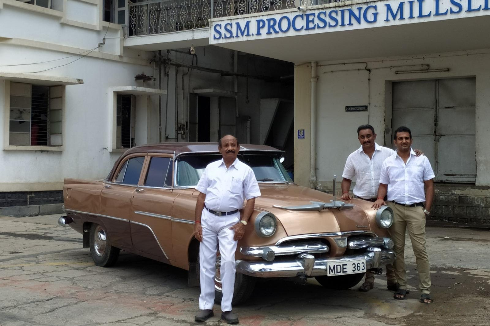

Work.
What I learned on a textile mill floor, in its ledgers, and the systems I built from it.

Where the thread starts.
At eleven I started going to my family's textile mill with my grandfather, who explained every process to me. I came back every school break for the next eight years, learning from the people who run it.
Each break brought more: checking incoming orders against physical stock, verifying raw material quality before it entered production, and working with plant staff to bring the facility into regulatory compliance.
I coordinated through the mill's line supervisors.
I learned finance to understand my family's businesses.
That is where finance started for me, not Wall Street. In 2026 I reconciled $70K+ a week in billing and purchases across three accounts in Tally, worked alongside two accounts staff, and supported month-end close.
"I didn't want to experiment with the company data with AI. At least not yet."
At Piqit, I reconciled marketplace settlements for fashion brands, from the sticker price down to what a brand is actually paid. Hover the chart to walk the chain.
Illustrative numbers per 100 of MRP. Real settlement data stays private.
The first thing I built.
In 4th grade, for FIRST LEGO League, I built a rover that sorted trash. A pressure sensor told it when a bin was full. I programmed it in LEGO's EV3 blocks.
Most of what I have built since, from an ERP to a pitch, comes back to the same question that rover asked: what is going on here, and what should happen next?
Illustrative. Not a recording of the original rover or its code.
The first draft was for a factory that doesn't exist.
I built the mill's ERP from scratch. The first design assumed a fully automated plant. The real mill runs on heavy machinery, but it depends on people at nearly every stage.
So I rebuilt it around them. The prototype is now used to train staff, with a target of a 40% cut in production cycle time. Rollout is pending.
A simplified sketch of the idea, not the real schema.
Draft two: work routes through the people who actually run the floor.